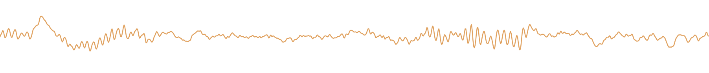
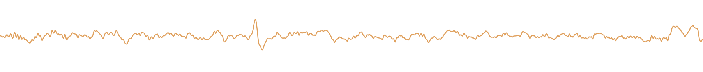
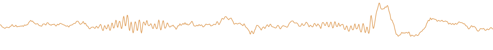
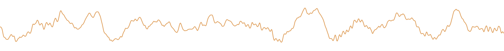
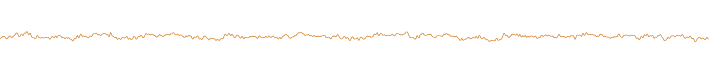

Each stage does a different job, and each one looks different in the brain. SuKo works with the stage, not the clock.
Wake
Relaxed, eyes closed, still aware of the room.

N1 · Drifting
A few minutes of loose, dream-like images.

N2 · Light sleep
Properly asleep, and still easy to wake.

N3 · Deep sleep
Restorative, but waking here leaves you groggy.

REM · Dreaming
Vivid dreams, usually after an hour or more.

Real EEG, one frontal channel, 10 seconds per row, same scale. YASA sample recording (Vallat & Walker, eLife 2021).
Same 45 minutes
Two very different endings.
Left alone, a short rest slides into deep sleep, and the alarm yanks you straight out of it. That is when grogginess is worst. SuKo sees deep sleep starting, brings you back up, then lifts you gently to wake.
Top: the first 45 minutes of a real night, scored by an expert in 30-second epochs (YASA sample recording; Vallat & Walker, eLife 2021, doi:10.7554/eLife.70092; data on Zenodo). The alarm at 44 minutes is added to show waking at that point. Waking from deep sleep causes the strongest sleep inertia (Hilditch & McHill, Nat Sci Sleep 2019). Bottom: the profile SuKo aims for, not a measured result.
How it works
Read the stage. Gently steer it.
You choose a session. SuKo knows which stage it is aiming for, and keeps checking and adjusting until the session ends.
01 · Sense
A dry-sensor headband reads your EEG.
02 · Decide
Software estimates your sleep stage every few seconds.
03 · Act
Sound, light and touch nudge sleep lighter, or let it deepen.
Inside the pod
EEG headband
Dry sensors, no gel, quick to fit.
Sound
Cues, soft masking and gentle tones, timed to the brain.
Light
Dimmable, colour-tuned light to settle in and to wake.
Haptics
Gentle touch and vibration to steer depth and to wake.
Control software
A live stage estimate drives every cue.
People
Trained staff, and a psychotherapist for Drift.
Three sessions
One pod, one engine, three ways to use sleep.
Light sleep · N1 + N2
Adaptive Rest
Wake up sharp, whatever time you have.
Tell SuKo how much time you have. It helps you fall asleep sooner, holds you in light sleep, and brings you back up if deep sleep starts, so you rise without grogginess.
For
Travellers, office and shift workers
Sleep onset · N1
Drift
New ideas and an emotional reset.
At the edge of sleep, thoughts loosen into images. Drift catches that window, cues it, holds it, and stops the slide into deeper sleep, with a psychotherapist guiding the session.
With
A psychotherapist
Dreaming · REM
Lucid
Explore and steer your dreams.
In longer sessions, SuKo waits for REM and uses gentle cues to help you become aware you are dreaming. Built first with research partners and sleep labs.
For
Research partners first
How a session goes
Why it can work
SuKo is in development. These studies did not test SuKo; the session flow is our design.
The science
Built on published research.
10 min
A short nap after a short night improved alertness and performance for up to 155 minutes.
Brooks & Lack, Sleep (2006)
83%
of people who reached N1 found a hidden shortcut in a maths task, against 31% who stayed awake.
Lacaux et al., Science Advances (2021)
κ 0.76
Agreement between a forehead EEG headband and expert lab scoring over full nights.
Lanthier et al., SLEEP Advances (2026)
SuKo turns what research already shows into a rest experience, starting with Adaptive Rest. In parallel, we are researching what comes next with Drift and Lucid. The studies above did not test SuKo itself.
Sheep Data
Sleep data with the story attached.
Every session can add one consented record: your context before, the EEG and every cue during, and how you felt after, annotated live by the staff in the room. Opt-in, pseudonymised and GDPR-compliant.
Talk with the founder
Curious about SuKo? Let's talk.
Sleep scientist, psychotherapist, venue, investor, or just interested in better rest: I'd love to hear from you.
TS
Thirumalai Srinivasan
Founder · M.Sc. student, Technical University of Munich
Biosignal hardware engineer: EEG acquisition, firmware and PCB design.